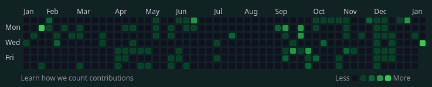

’Git’ting things done
make sure to have a proper gitconfig file
Table of Contents
After a long time, I’m writing an article, and it sadly is not about
the things I’m working on. This one is more like a note to anyone out
there finding themselves in this unfortunate position: having worked
on some projects over the holidays (alas, “worked” is an
understatement) and on a forcibly new installation, some files were
hastily rewritten/copied, so that I would not lose any time during the
transition. One critical such file was my .gitconfig1.
Beware
Well, don’t pay attention to the fanfare—just make sure to read your
details carefully, or you will find yourself in my position, as I did.
I hastily created a minimal .gitconfig and sailed on, working on my
projects and keeping my remotes up to date, until today, when I
noticed something off with my GitHub timeline2.
[user]
name = <your-name>
email = <your-email> ; make sure it really is your email
username = <your-username>
[init]
;; Instead of master, main is alright
defaultBranch = main
[push]
;; Avoid setting upstream
default = current
[checkout]
;; I mainly work with GitHub, like the consistency of it
defaultRemote = gh
[core]
editor = nvim
whitespace = fix,-indent-with-non-tab,trailing-space,cr-at-eol
Identification, Evaluation, Solution… Amendment

Figure 1: Don’t mind the current date, just see the empty ones around it
My timeline was empty during arguably one of the busiest periods I had
this year—this could not be right! Heading to one random repo, I
verified that I was not crazy (at least, not that much): the commits
existed there. Strangely, not only did they exist, but their author
was listed as me—it was just that… the account was not linked. I
immediately thought of my .gitconfig. Something had to be wrong there.
The files looked pretty identical (at least the critical parts)
between this and my working installation. In fact, the config command
looked the same.
git config -l
But it was not. I had managed to write my email address incorrectly
and, as a result, EVERY SINGLE COMMIT I had made on my newest
installation had the wrong author details. Thankfully, it is easy to
solve, and all that is needed are 1, 2, and 3 commands.
# Find your last "proper" commit git log # Fix faulty commits git rebase -r <proper_commit_id> --exec 'git commit --amend --no-edit --reset-author' # Overwrite remote repo, necessary to my knowledge buuuut # well, it will be more painful in shared repos, # than it was in my personal ones. Check it first. git push -f
These will update all commits after the one specified so that they
have the proper author properties. There is just one funny catch:
since the second command does not “modify” the already existing
commits but, instead, creates new ones with the same contents, their
date gets shifted to the date that the git rebase command is executed.
This is how the last date in my screenshot is so brightly green… I
borrowed something from my past self. ;)